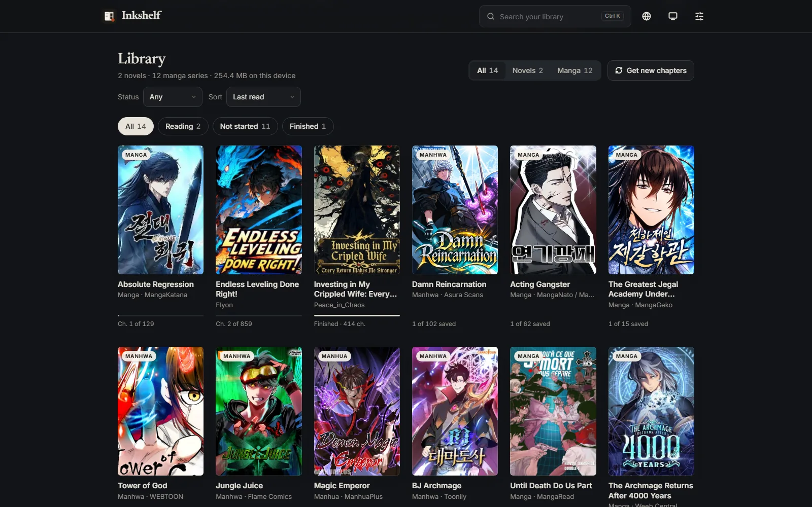
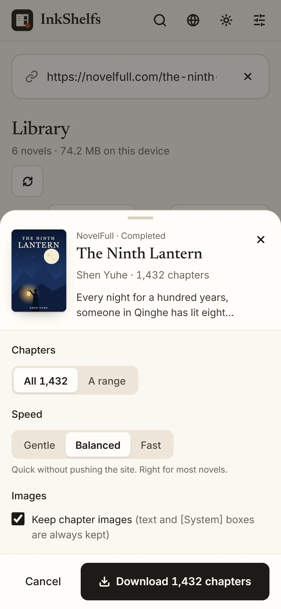
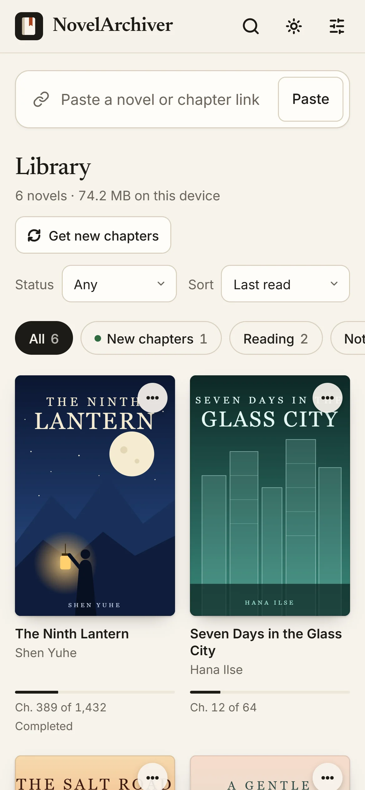
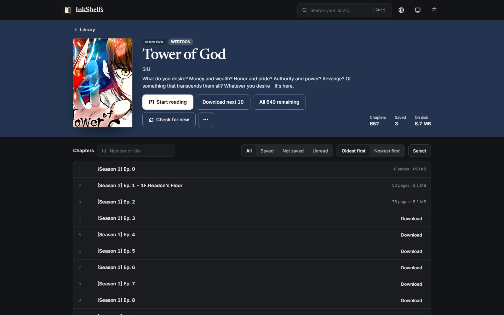
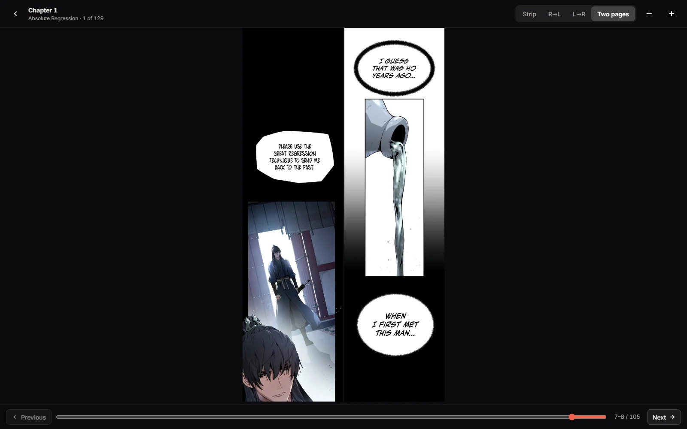

Web novel & manga downloader: The next chapter, on the train.
InkShelfs saves the web novels, manga, manhwa and manhua you follow to your PC or phone, so you can read on the commute, at lunch, or wherever the signal drops. No ads in the middle of a chapter, no pop-ups, no waiting for pages to load.


Made for the gaps in your day
Web novel sites are built to be read online, one page load and one ad at a time. That’s fine at a desk. It’s miserable in a tunnel.
Chapters are on your phone before you leave. Underground, in a dead zone, on a flight: the next page is already there.
No autoplay video, no full-screen pop-ups, no “continue in our app”. Just the chapter, in a quiet reader you can set the way you like.
Following ten ongoing novels and a few weekly manhwa? One click on Get new chapters brings in everything that came out since yesterday, novels and manga together.
Paste a link. See what you’ll get first.
Paste a novel or manga page, or any chapter link. InkShelfs works out what it is, looks it up and shows the poster, how many chapters there are, and anything worth knowing, before a single chapter downloads.
- Everything, a range, or from the chapter you’re on
- Choose the speed, and whether to keep chapter images
- Paid or locked chapters are skipped and stay locked

Downloads that don’t get in the way
Add more novels while one is downloading; they wait their turn. Switch to another app or turn the screen off and it keeps going, with its progress in a notification. When your novels get new chapters, Get new chapters catches them all up at once.
- Get new chapters: only what came out since last time, for every ongoing novel
- Keeps downloading in the background, with a Pause button in the notification
- Retry fetches only the chapters that failed; “Only on Wi-Fi” if you like


A reader that stays out of the way
Light, sepia or dark. Serif or sans. The text size, spacing and width you like, set once for every novel. Formatting comes through intact, including the “system” status boxes LitRPG stories live on.
The ninth lantern caught on the first try. Yuhe hooked it onto the iron arm above the water and waited.
Lanterns lit tonight: 9
Lanterns recorded: 8
He read the words twice. The ledger had never spoken to him before.

The same library on your PC
On Windows you get the same library and reader in a desktop window, with room for the full chapter list, 100 chapters a page. Export any novel as an EPUB for Kindle, Play Books, Apple Books or KOReader, and back up the whole library to one file.
- EPUB for novels, CBZ for manga
- One site window: a “verify you’re human” check passed once counts for both

Manga, manhwa and manhua, offline.
Paste a series or chapter link from MangaDex, WEBTOON, Asura Scans or nine other sites. Pick all chapters, the first few, a range, or from the one you pasted. Every page is checked to be a real image before it’s saved, so a site’s error page never ends up in your copy.
- A long strip for webtoons; pages right-to-left or left-to-right; two pages side by side
- Pages keep their real size before they load, so the strip never jumps under your thumb
- At the end of a chapter the next one opens, or downloads with one click
- Select chapters to download or to free up space; save a series as one CBZ for Komga, Kavita or Mihon
On Android too: swipe to turn pages, double-tap to zoom, and downloads keep going with the screen off.


Installing: about the warnings
InkShelfs is free and isn’t sold through the Microsoft Store or Google Play, so it isn’t signed with a paid publisher certificate. The first time you open it, Windows or Android will warn about an unknown app. That’s expected; here’s exactly what to tap.
Windows 10 and 11
Microsoft Defender SmartScreen blocks apps it hasn’t seen many people run yet.
- Your browser may say “InkShelfs.exe isn’t commonly downloaded”. In Edge choose ⋯, Keep, then Keep anyway.In Chrome, choose Keep on the download.
- Open
InkShelfs.exe. A blue box says “Windows protected your PC”. Click More info, the small link under the text. - The publisher shows as “Unknown publisher”. Click Run anyway.Windows asks once for each new version.
Android 7 and newer
Android protects you from apps that don’t come from Google Play, so it asks you to allow this one.
- Chrome may say “File might be harmful”. Tap Download anyway.
- Open the downloaded
.apk. If you see “not allowed to install unknown apps from this source”, tap Settings, turn on Allow from this source, then go back. - Tap Install. If Play Protect warns about an “unknown developer”, tap More details, then Install anyway.If it offers to scan the app, either choice is fine.
- Updating later? Install the new
.apkover the old one. Your library stays.Had the NovelArchiver test app? InkShelfs installs over it and keeps your library.
Get-FileHash $HOME\Downloads\InkShelfs.exe
Coming from NovelArchiver on Windows? InkShelfs opens the same library, reading places and settings. Nothing to move.
Works with the sites you read
Novels · 13
- NovelBin
- NovelFull
- ReadNovelFull
- NovelPing
- Royal Road
- WuxiaWorld
- ScribbleHub
- FreeWebNovel
- NovelFire
- EmpireNovel
- Webnovel (free chapters)
- Wattpad
- Archive of Our Own
Chinese and Japanese novels · 4 (translated to English)
- 69shuba 69书吧
- UUKanshu UU看書
- Shousetsuka ni Narou 小説家になろう
- Kakuyomu カクヨム
Manga, manhwa and manhua · 12
- MangaDex
- Mangapill
- Weeb Central
- MangaKatana
- MangaRead
- Toonily
- ManhuaPlus
- Flame Comics
- WEBTOON (free episodes)
- MangaGeko
- MangaNato / MangaKakalot
- Asura Scans
Every site was tested with a real download. The app’s Sites page lists them all with a “Try an example” link. Other novel sites open in a general reader mode, and when a site changes its layout, its rules can be fixed without a new release.
What’s new in 3.2.1
- Translation that worksChinese and Japanese chapters now really translate. The first few translate as they download; the rest translate quietly in the background, and the chapter you open translates first.
- Open and ShareOn Android, a saved EPUB or CBZ opens straight in your e-book or comic app, or goes to Kindle, Drive or a chat with Share.
- Retry that finishesRetry fetches only what failed, and a chapter a site skips is marked instead of failing forever.
- Phone fixesThe manga reader’s Next button, the novel page buttons and the chapter list fit small screens.
3.2
- Search by titleType a novel’s name instead of a link. Every site is searched at once, and each novel shows once with a row per site.
- Compare chapter countsSee which site has the most chapters before you download; Count reads a site’s full list, paid chapters counted apart.
- Chinese and Japanese novels69shuba, UUKanshu, Shousetsuka ni Narou and Kakuyomu, translated to English as they download. Switch to the original any time in the reader.
- Search in Chinese and JapaneseTurn on 中文 or 日本語 and an English title finds the original too, often far ahead of the translations.
- Wattpad and AO3Stories and works from both, with search.
Questions
What happened to NovelArchiver?
It’s the same app with a new name. InkShelfs opens your existing NovelArchiver library on Windows, and manga gets its own shelf beside it. On Android, InkShelfs installs over the NovelArchiver test app and keeps your library.
Can it read Chinese or Japanese novels?
Yes, since 3.2. Chapters from 69shuba, UUKanshu, Shousetsuka ni Narou and Kakuyomu are saved as written and translated to English with Google Translate as they download, free and without an account. The title and chapter list are translated too, and the reader’s EN / 原文 switch shows the original. To find one, type its title in Chinese or Japanese, or turn on 中文 / 日本語 under the search results. 69shuba isn’t searched (it asks you to verify you’re human every time), so paste its links instead.
Does Android have manga?
Yes, since 3.1: the same sites, reader and library as on Windows. Swipe to turn pages and double-tap to zoom.
How much space does manga take?
A chapter is a set of pictures, usually 5–30 MB. A long series can take a few GB, so you can delete the pages of chapters you’ve read from the series page and download them again later.
Is it free?
Yes, and open source. There are no accounts, no subscriptions and no ads in the app.
Does it work without internet?
Reading does. You need a connection to download chapters and to get new ones; after that everything opens offline.
Can I use other apps while it downloads?
Yes. On Android a notification shows the progress and the download carries on in the background, even with the screen off. Some phones (Xiaomi, Oppo, Realme, Vivo) stop background apps aggressively; if yours does, set InkShelfs’ battery use to “Unrestricted”.
Will it download paid or locked chapters?
No. Paid chapters are skipped and stay locked on the site. InkShelfs only saves what the site already shows you for free.
A site asked me to verify I’m human. Now what?
The download pauses and a site window opens. Tick the check yourself and the download carries on. The app never solves or skips these checks for you.
Does it send my library anywhere?
No. Chapters are saved on your device and read from there. The one exception is translation: the text of Chinese and Japanese chapters is sent to Google Translate to be put into English. Backups are a file you keep wherever you like.
Can I move my library to a new phone or PC?
Yes. Settings → Back up saves everything to one file; Restore on the new device merges it in.